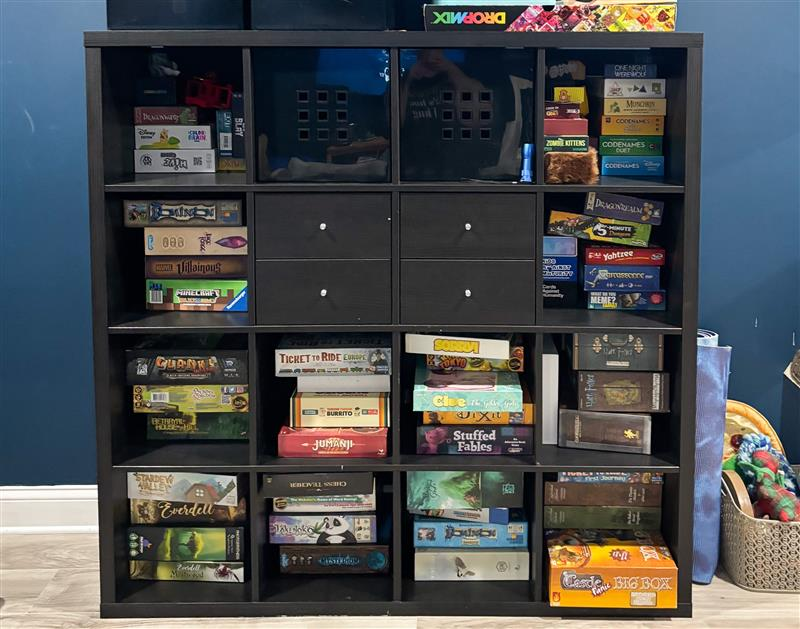
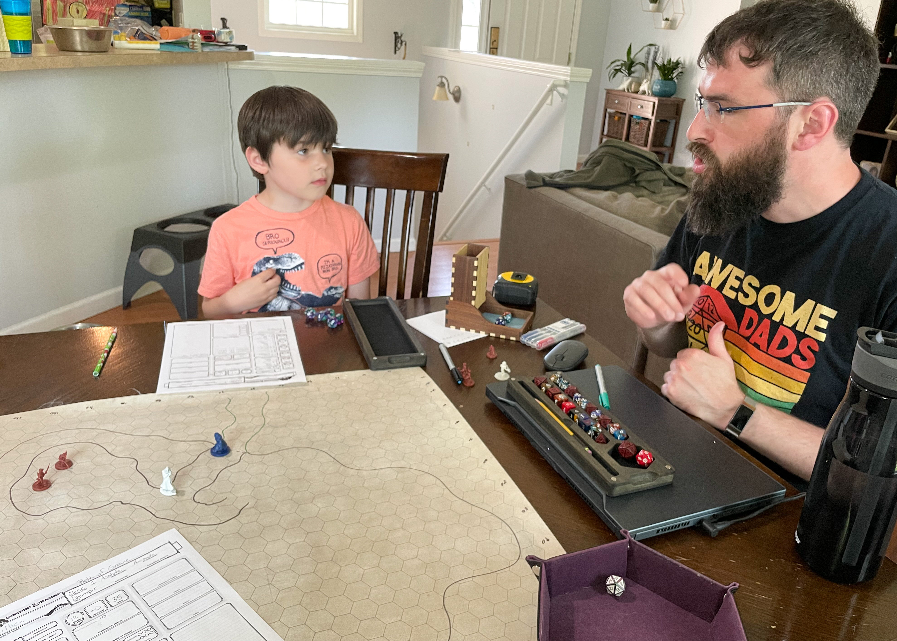

“Friends! Family! Companions of every table...
Stand with me!
For tonight, we do not face the darkness.
Tonight, we face adventure.
Lift your dice, your cards, your controllers.
For this is our fellowship
and on this day, we game!”

One PC to Rule Them All
Video games are a big part of the Hoffmann household. So much so, we all have our own custom built
computers and family servers where we can play games like Minecraft together.
Minecraft is a pretty big deal here. Zach and I both started playing when it was in beta while I was
pregnant with my now 16-year-old. You'll find both my boys write code to create modifications
to Minecraft as often as you'll see them playing it.
I have played a wide variety of games as the type of game played fulfills a different need. Many
of my games are categorized as 'cozy' which are generally low stakes and often adorable. But
I will also play more challenging games with large worlds to explore and epic stories to play
through.
My top 5 most played games are:
- Animal Crossing: New Horizon
- No Man's Sky
- Hello Kitty Island Adventure
- Baldur's Gate III
- Disney Dreamlight Valley

One Does Not Simply Walk Away from Game Night
Board games are another one of my favorite activities, particularly when I get to play with friends.
The types of games we play come in a wide variety ranging anywhere from super quick card games to
board games
that are made up of entire campaigns with hours and hours of replayibility. One session of these
games can take up to 3 hours and have entire books full of rules.
Some of my favorite boardgames include:
- Takenoko - It has an adorable panda that keeps eating the bamboo from your bamboo farm!
- Everdell - A city building/resource game where you pick a group of small forest animals that have to survive through the seasons.
- 5-Minute Dungeon - A fast-paced, cooperative card game where players work together to defeat monsters and escape dungeons within 5 minutes
- Sleeping Gods - This is a cooperative fantasy campaign board game that's essentially a video game in a boardgame format
- Dominion - A medieval themed deck building card game where players aquire cards from a shared supply, aiming to help you gather the most victory points by the end of the game (I am quite bad at this game but it's fun nonetheless)

The Fellowship of the Crit
Irish playwright and political activist George Bernard Shaw once said, "We don't stop playing because
we grow old; we grow old because we stop playing." Dungeons & Dragons is definitely proof of that.
It gives an outlet that allows us to stay curious, connected, and full of wonder. How else would you
explain the excitement and cheers of winning an imaginary archery tournament, with your imaginary
adventuring
party, and winning a ton of imaginary gold? That was one of the best moments in our first campaign
with our closest friends that spanned over a year and a half. Many of those same friends continued
playing for
several more years, and two of them we still play with to this day.
We also occasionally get to play with our boys, although interest tends to come and go. But I
have a collection of about 23 characters made, always ready to start their adventure. I will usually
whip one out
for my birthday, where for the past four years, my amazing husband has ran a one-shot adventure for
myself and our awesomely nerdy friends.